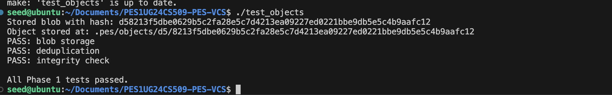
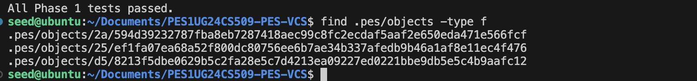
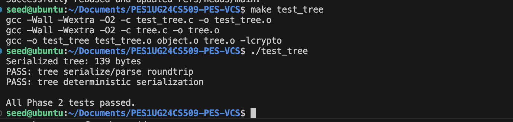
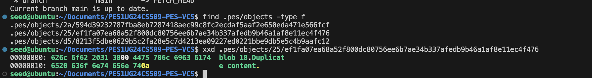
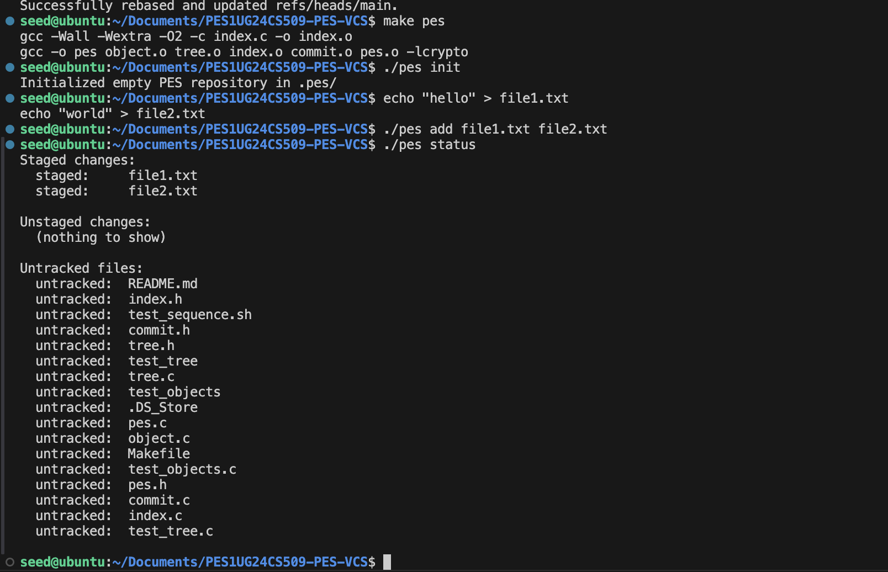
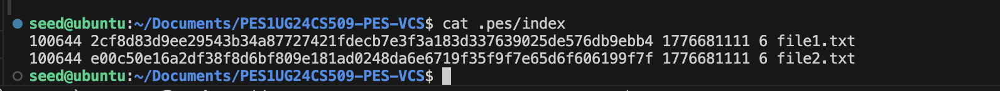
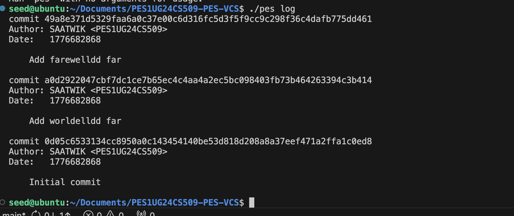
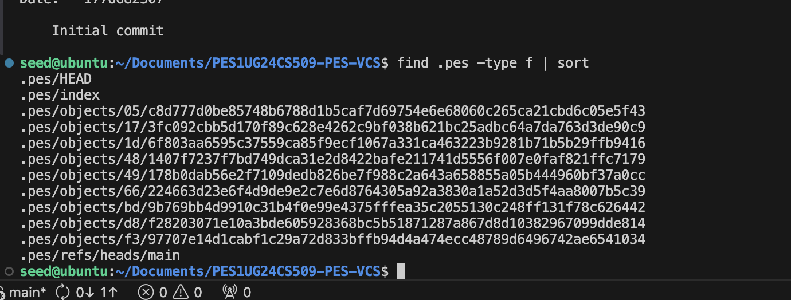
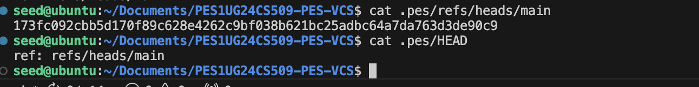
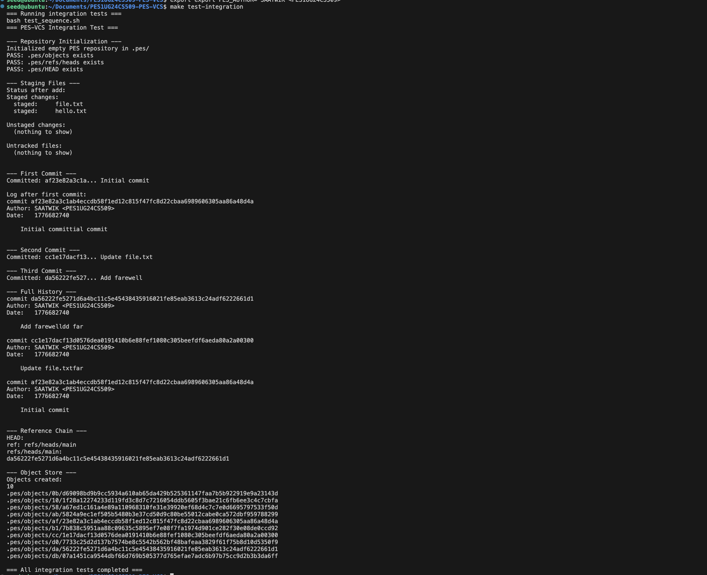

This README is rewritten as a submission-focused report with direct evidence links and complete answers for Phase 5 and Phase 6.
object.c, tree.c, index.c, commit.c, headers, tests, Makefile)report.pdf1A: ./test_objects output showing tests passing.

1B: .pes/objects sharded storage evidence.

2A: ./test_tree output showing tests passing.

2B: Raw tree/object bytes (xxd) evidence.

3A: pes init -> pes add -> pes status sequence.

3B: .pes/index text-format staging data.

4A: pes log output showing commit history.

4B: .pes file growth / stored objects evidence.

4C: Branch reference and HEAD pointer evidence.

5A: Integration test evidence.

Question: A branch in Git is just a file in .git/refs/heads/ containing a commit hash. Creating a branch is creating a file. Given this, how would you implement pes checkout <branch> - what files need to change in .pes/, and what must happen to the working directory? What makes this operation complex?
Answer: To implement pes checkout <branch> in PES-VCS:
.pes/refs/heads/<branch> to get the target commit hash..pes/:
.pes/HEAD as ref: refs/heads/<branch> (for normal branch checkout)..pes/refs/heads/<branch> unchanged during checkout; only HEAD changes here..pes/index entries so index becomes a clean mirror of checked-out commit tree.Why this is complex: - Checkout is not only pointer switching; it is a full filesystem transformation. - It must avoid data loss when local uncommitted edits overlap files changed by target branch. - It requires recursive tree diff/apply logic and careful file ordering (delete/overwrite/create) for correctness.
Question: When switching branches, the working directory must be updated to match the target branch’s tree. If the user has uncommitted changes to a tracked file, and that file differs between branches, checkout must refuse. Describe how you would detect this “dirty working directory” conflict using only the index and the object store.
Answer: A practical conflict-detection algorithm:
HEAD_tracked_set from current HEAD commit tree (path -> blob hash, mode).TARGET_tracked_set from target branch commit tree (path -> blob hash, mode).INDEX_set from .pes/index (path -> staged blob hash, mode, mtime, size).HEAD_tracked_set:
mtime, size) with index entry.This catches exactly the unsafe case: local edits on a path that checkout would overwrite/delete.
Question: “Detached HEAD” means HEAD contains a commit hash directly instead of a branch reference. What happens if you make commits in this state? How could a user recover those commits?
Answer: In detached HEAD state:
HEAD moves commit-to-commit directly, forming a temporary history chain.Recovery methods:
.pes/refs/heads/recover containing current commit hash..pes/HEAD to ref: refs/heads/recover.Main idea: make at least one branch/reference point to those commits before garbage collection, so they stay reachable.
Question: Over time, the object store accumulates unreachable objects - blobs, trees, or commits that no branch points to (directly or transitively). Describe an algorithm to find and delete these objects. What data structure would you use to track “reachable” hashes efficiently? For a repository with 100,000 commits and 50 branches, estimate how many objects you’d need to visit.
Answer: Algorithm (mark-and-sweep):
.pes/refs/heads/*.reachable keyed by 32-byte object ID (or 64-char hex string).reachable, skip..pes/objects/*/*.reachable, delete object file.Data structure choice: - Hash set provides expected O(1) membership for large object graphs. - Queue/stack for traversal frontier.
Scale estimate: - 100,000 commits with one parent each means up to about 100,000 unique commit nodes to visit (often fewer due to shared history among branches). - Trees/blobs dominate count. If average commit introduces around 1 new tree and a few new blobs, total reachable objects can be several hundred thousand to over a million depending on churn. - So GC traversal should be designed for roughly O(number of reachable objects + total objects on disk).
Question: Why is it dangerous to run garbage collection concurrently with a commit operation? Describe a race condition where GC could delete an object that a concurrent commit is about to reference. How does Git’s real GC avoid this?
Answer: Danger comes from non-atomic multi-step commit creation:
Race example: - Commit writer creates new tree object T and commit object C. - Before ref update (refs/heads/main -> C) happens, GC scans refs and cannot see C/T as reachable. - GC deletes C or T as “unreachable”. - Commit then updates ref to C, but object is missing/corrupt history.
How real Git avoids this: - Uses reachability closure including reflogs and recent objects. - Uses safety windows/pruning grace periods (gc.pruneExpire) so very new unreachable objects are not immediately deleted. - Coordinates maintenance with locking and careful object/pack handling so writers and GC do not invalidate each other.
report.pdf at repository root for submission.